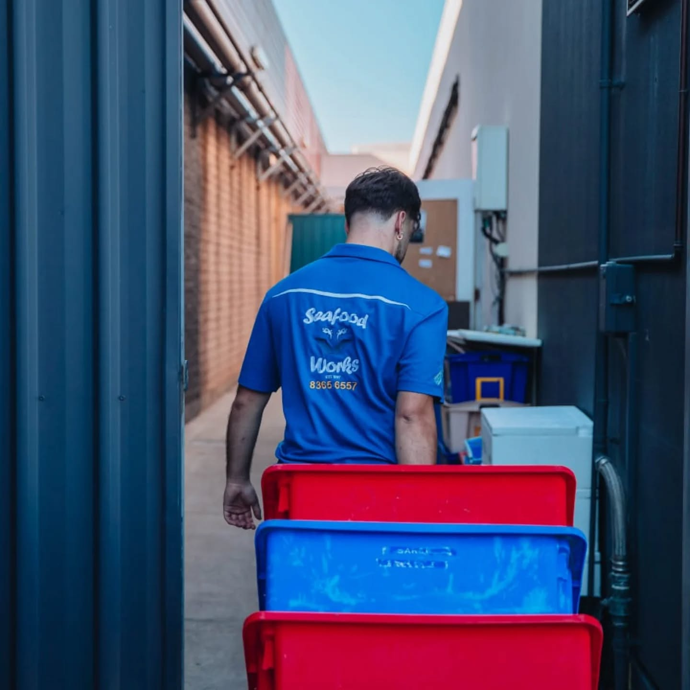
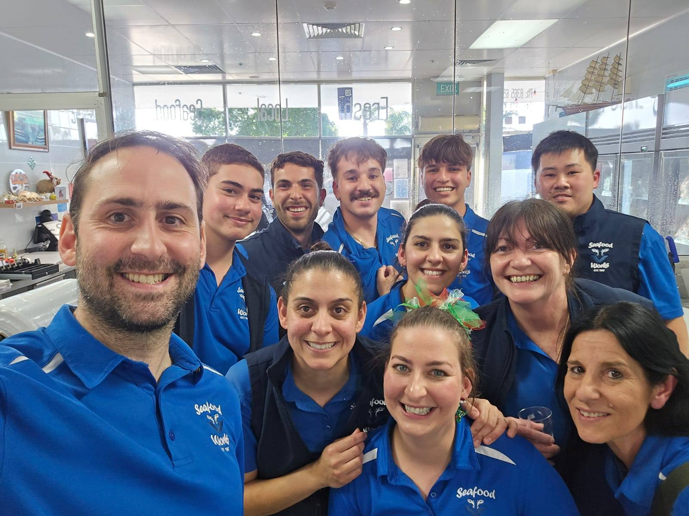

Our story
Newton's Fishmonger Since 1997
A family business built on fresh seafood, honest prices and a genuine love of the sea.
How it began
From a Passion for Fresh Seafood
Seafood Works was founded in 1997 with a simple belief: everyone deserves access to quality, fresh-from-the-sea seafood at a fair price.
What started as a small retail shop grew steadily as word spread throughout Newton and the surrounding suburbs. In 2001 the business relocated to its permanent home at Newton Central Shopping Centre — and it's been a fixture there ever since.
Every morning, before the doors open, our team is already at the SAFCOL fish markets selecting the best the day's catch has to offer. That's why freshness isn't a promise here — it's just the way we work.

1997
Year established
4.7★
Google rating
(150+ reviews)
25+
Years serving
Newton
100%
Family owned
& operated
Why choose us
What Makes Seafood Works Different
Genuinely Fresh, Every Day
We buy direct from the SAFCOL fish markets each morning. Our stock turns over daily — there's no yesterday's fish on our counter.
Family Owned & Run
We're not a chain. The same family that started this business in 1997 is still behind the counter today — and they take pride in every sale.
Oysters Shucked In-Store
Our oysters are freshly shucked right here in-store, year-round. Natural, Kilpatrick, or seasonal — we have something for every occasion.
Wholesale & Home Delivery
We supply restaurants, caterers and households alike. Wholesale pricing is available, and we deliver fresh seafood across all Adelaide suburbs.
Industry Award Finalist
Recognised as a finalist in 3 categories at the Seafood Industry Awards — an independent acknowledgement of the quality and service we bring every day.
People Who Actually Know Seafood
Ask our team anything — what's freshest today, how to cook it, what pairs with what. You'll get a straight answer, every time.

Behind the scenes
Early Starts, Fresh Results
A great fishmonger doesn't just sell seafood — it earns it.
Our team starts long before the shop opens, sourcing, sorting and preparing so that every customer who walks through our doors gets the best possible product. It's unglamorous work and we love it.
Our branded refrigerated van is a familiar sight around Adelaide, delivering fresh catches to homes and businesses across the metro area.

The people
Meet the Team
A dedicated crew who are passionate about seafood and genuinely love looking after our customers.

Come Say Hello
Shop 17, Newton Central Shopping Centre — Mon to Fri 9am–6pm, Sat 9am–5pm.